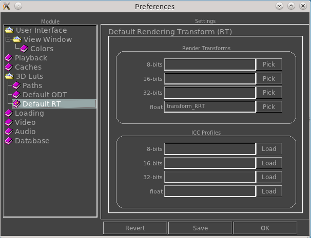

|  |
Default Rendering Transforms (RT)These allow setting the rendering transform for each image's bit depth. The environment variables are: MRV_CTL_RT_8bits, MRV_CTL_RT_16bits, MRV_CTL_RT_32bits, MRV_CTL_RT_float. These allow setting the ICC profile for each image bit depth. The environment variables are: MRV_ICC_RT_8bits, MRV_ICC_RT_16bits, MRV_ICC_RT_32bits, MRV_ICC_RT_float. |